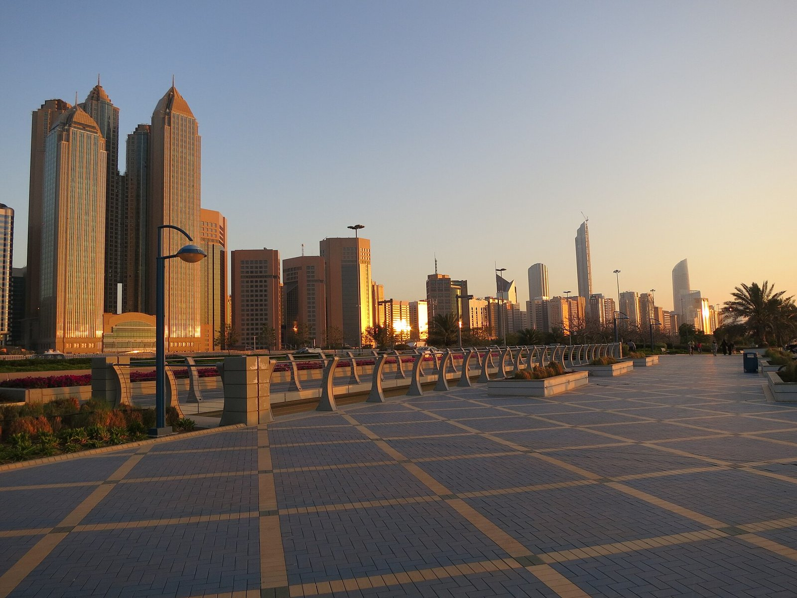
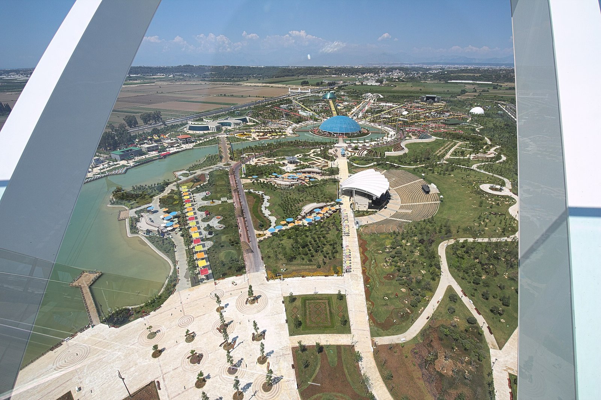
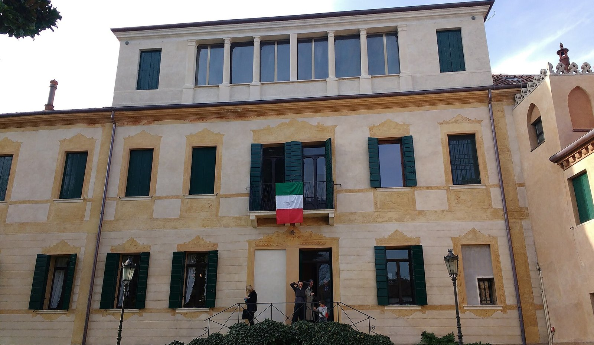
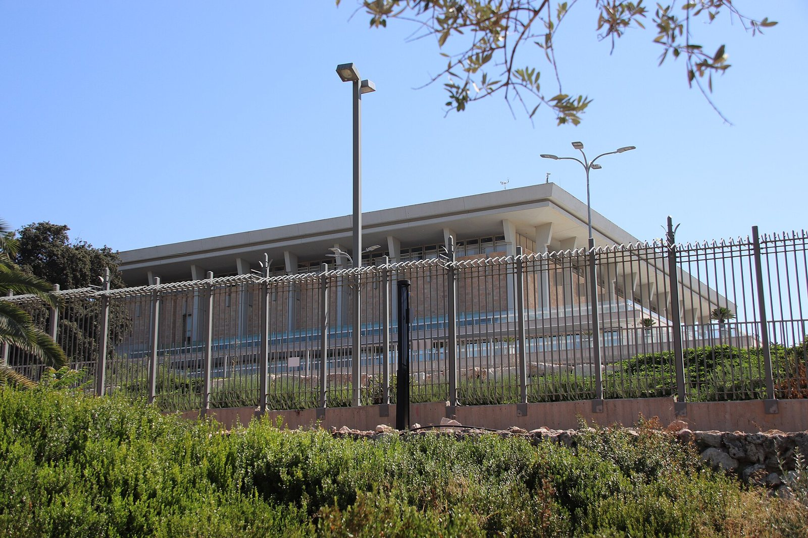
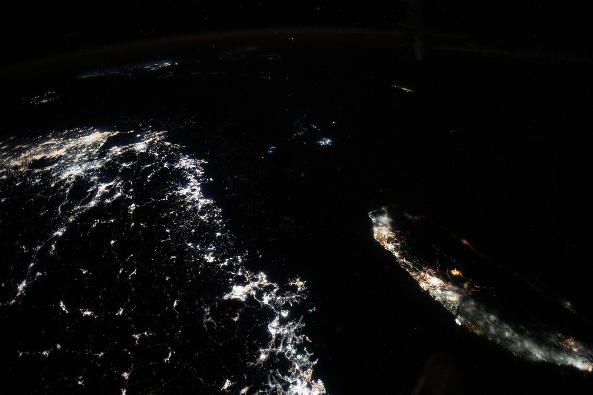
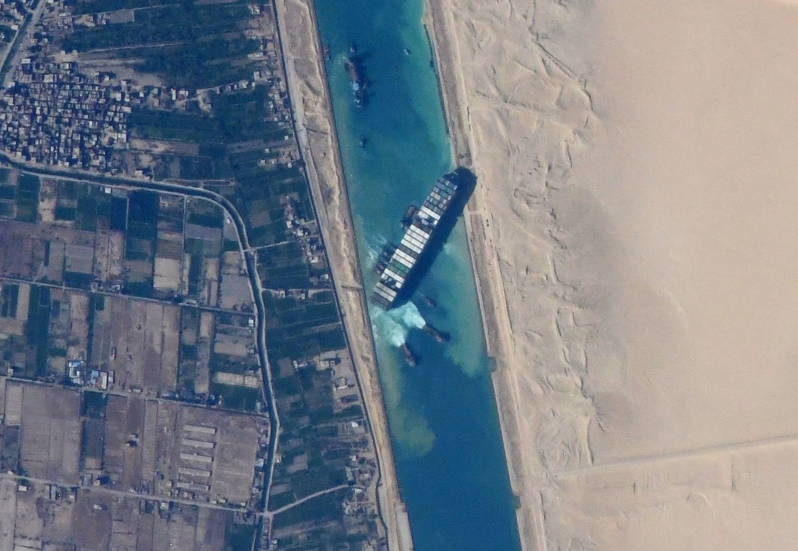

Archivio
Tutti gli articoli

Ucraina: cosa è uscito da Abu Dhabi
Scambio di prigionieri, nessuna svolta sul Donbas, l'Europa fuori dal tavolo a tre.
In 3 puntiIsraele: Eisenkot ha l'incarico, e ora?
67 indicazioni, ma servono 61 voti: le strade possibili e la risposta di Netanyahu.
Ieri e oggi9 novembre 1989: la notte in cui cadde il Muro
Come si aprì il Muro di Berlino, quasi per sbaglio.

COP31 ad Antalya: chi tratta, cosa si decide, chi paga
Turchia e Australia, i numeri del clima, chi paga.
In 3 puntiUcraina, la settimana dei negoziati: e l'Italia?
Quattro tavoli in una settimana: chi c'è, quanto costa, dov'è l'Italia.
In 3 puntiLa manovra 2027 in 3 punti
Tasse, famiglie e pensioni, e dove si discute.
Il conto per l'ItaliaMidterm 2026: vincono i democratici, cosa cambia per noi
Camera e Senato ai democratici: i numeri e cosa cambia per noi.

4 novembre 1918: perché è festa, ma si lavora
Vittorio Veneto, Villa Giusti e una festa che dal 1977 non è vacanza.
In 3 puntiIsraele dopo il voto: nessuna maggioranza, e ora?
Nessun blocco arriva a 61: i numeri, il nodo dei partiti arabi, i tempi.
Il conto per l'ItaliaMidterm USA: perché il voto del 3 novembre riguarda anche noi
Cosa si vota, cosa dicono i modelli, cosa cambia per noi.
In 3 puntiLa legge elettorale finisce davanti alla Consulta?
Ricorsi in 25 tribunali contro lo Stabilicum: chi, cosa e quando.
Ieri e oggi28 ottobre 1922: la Marcia su Roma
Come il fascismo arrivò al governo in quattro giorni.

Israele al voto: Netanyahu contro Eisenkot
Chi si sfida, come si vota e cosa dicono i sondaggi.
La mappa spiegaBrasile: ha vinto Lula, e Bolsonaro contesta
Lula rimonta e vince con il 51,8%. Flávio Bolsonaro non riconosce il risultato.
AttualitàL'Italia che non arriva a fine mese
Dai tir fermi al Sud ai saccheggi di Milano, fino alle piazze del 24 ottobre.
In 4 puntiIl decreto cortei è costituzionale?
Cosa prevede il decreto in vigore dal 23 ottobre e i quattro punti che dividono i giuristi.

Taiwan in 60 secondi
Dal 1949 alle tensioni attuali nello Stretto.

Suez: il canale che ha già fatto cadere un impero
La crisi del 1956 e le rotte del Mar Rosso oggi.
La mappa spiegaPerché tutti vogliono la Groenlandia
Dall'offerta di acquisto americana del 1946 alla corsa all'Artico.
Ieri e oggiDazi: l'America ci ha già provato nel 1930
Le tariffe Smoot-Hawley e le guerre commerciali di oggi: cosa insegna il precedente.
In 3 puntiLa nuova legge elettorale, in 3 punti
Premio di maggioranza, soglie e preferenze: come funziona lo Stabilicum approvato l'8 ottobre, senza schierarsi.